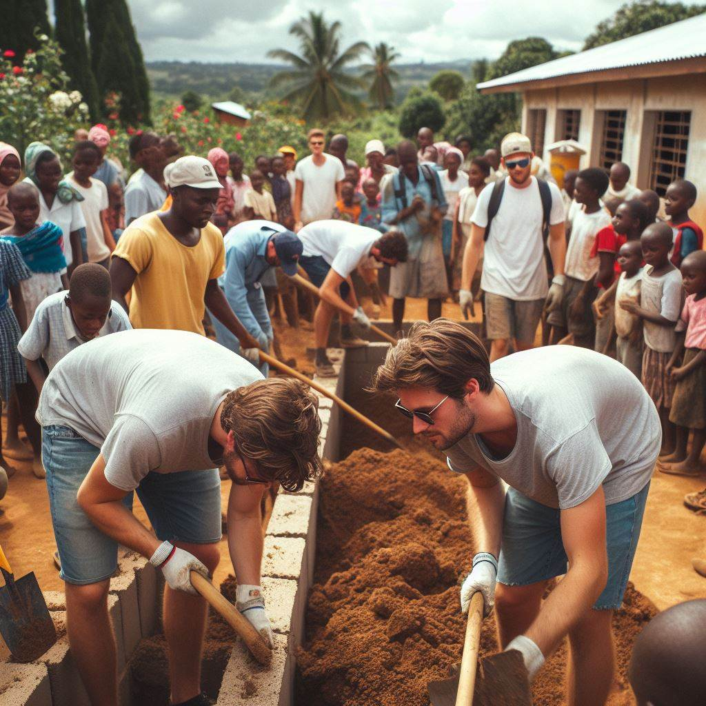

CAMPAÑAS
Construyendo Escuelas, Construyendo Futuros
Autor: Equipo de EducaFuturo
Esta campaña se centra en la reciente campaña de recaudación de fondos para la construcción de escuelas en áreas rurales. Se destaca el éxito y la generosidad de los donantes. Además, se resalta cómo la construcción de escuelas no solo proporciona educación, sino que también crea oportunidades económicas y fomenta la participación comunitaria.
La campaña incluye testimonios de beneficiarios y donantes, así como estadísticas sobre el impacto de la educación en las comunidades rurales. Se difunde a través de medios de comunicación, redes sociales y boletines informativos de la ONG.
Para obtener más información, comuníquese con nosotros al info@educafuturo.com o llame al 933 02 02 24.
Un Futuro Más Brillante para Todos
Autor: Equipo de EducaFuturo
Esta campaña refuerza el compromiso de EducaFuturo con la educación inclusiva y equitativa. Se destaca la visión de un mundo donde la educación sea un derecho fundamental para todos. Se invita a la comunidad a unirse a la causa y a seguir apoyando los esfuerzos de la organización para brindar oportunidades educativas a niños y jóvenes.
La campaña se complementa con historias inspiradoras de éxito educativo y testimonios de personas cuyas vidas han sido transformadas gracias a la educación proporcionada por EducaFuturo. Se difunde a través de campañas en redes sociales, boletines informativos y eventos de sensibilización comunitaria.
Para obtener más información, comuníquese con nosotros al info@educafuturo.com o llame al 933 02 02 24.
La Llave del Cambio

Autor: Equipo de EducaFuturo
Esta campaña se centra en destacar el papel fundamental de la educación como motor de cambio en las comunidades menos favorecidas. Se enfoca en narrativas de personas reales cuyas vidas han sido transformadas a través del acceso a la educación proporcionada por EducaFuturo. Desde historias de superación hasta testimonios de éxito profesional, la campaña resalta cómo la educación abre puertas y brinda esperanza para un futuro mejor.
La campaña incluye videos testimoniales, entrevistas con educadores y estudiantes, y casos de estudio que ilustran el impacto tangible de la educación en la vida de las personas. Se comparte en plataformas digitales, eventos comunitarios y programas de televisión local para llegar a una audiencia amplia y diversa.
Para obtener más información, comuníquese con nosotros al info@educafuturo.com o llame al 933 02 02 24.